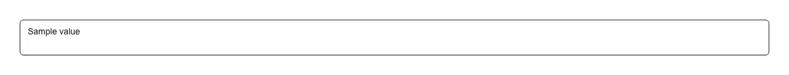

A textarea that grows as you type and stops at a maximum height, then scrolls. Reach for it wherever a fixed-height box is the wrong shape: a chat, message or AI prompt composer; a comment, reply or code-review box; a commit message or pull-request description; a bio, note, changelog, release note or feedback field; a support ticket or contact form; a task or issue description; and any "tell us more" field where one line is too small and a tall empty box wastes the page. Common asks it answers: "auto resize textarea", "auto-growing textarea", "expanding textarea react", "textarea that grows with content", "auto height textarea", "textarea min rows max rows", "chat input that expands", "message composer textarea", "prompt input that grows", "ChatGPT-style input react", "shadcn autosize textarea", "shadcn textarea auto grow", "react-textarea-autosize alternative", "autosize textarea without a library", "textarea scrollHeight resize", "growing text input component". shadcn/ui's own textarea is a fixed-height styled element with a drag handle in the corner; this replaces that behaviour, and turns the handle off, because the height is now the field's own business. minRows sets the height it sits at when empty, maxRows caps the growth before it starts scrolling. The reason to install it rather than paste the four-line version is that the four-line version is subtly wrong in three ways that only show up on somebody else's screen. It measures a row from the element's real computed line-height — and falls back to the font size where that computes to "normal", which is what it computes to unless you set it explicitly, and which parses to NaN and produces a field with no height at all. It adds the border back on a border-box element, because scrollHeight counts content and padding but not border, so the naive arithmetic is short by a pixel or two on every keystroke and the field creeps. And it watches the element rather than the window, so the height is recomputed when a collapsing sidebar, an opening drawer, a resizing split pane or a tab becoming visible rewraps the text — none of which fire a window resize — while deliberately ignoring height changes, since reacting to its own writes would feed the observer straight back into itself. It renders at roughly the right height before hydration through the rows attribute, so there is no first-paint jump in Next.js, and it is correct controlled or uncontrolled: a controlled field re-measures on the value it is given, an uncontrolled one on its own input. It keeps the native <textarea> and forwards a ref to it, so labels, placeholders, autofocus, maxLength, form libraries such as react-hook-form, and native validation all work unchanged. Styled with shadcn tokens (border-input, ring, muted-foreground) so it follows light and dark, and it ships zero dependencies beyond your own cn util — no icon package, one file.

Rendered on the shadcn default neutral palette with harness-generated props.
pnpm dlx shadcn@4.21.0 add @pulld/autosize-textarea
| licence | POINTER |
|---|---|
| primitive base | none |
| type | registry:ui |
| files | src/components/ui/autosize-textarea.tsx |
| npm deps pulled | none beyond the pre-installed peer set |
| registry deps | — |
| semantic / palette / hex | 3 / 0 / 0 |
| writes shared ui/ | yes — can overwrite the project’s own primitives |